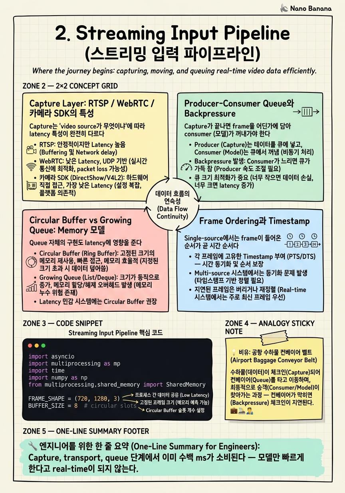

Streaming Input Pipeline

🎯 학습 목표
- RTSP, WebRTC, 카메라 SDK의 latency 특성을 비교하고 시나리오별 선택 기준을 제시할 수 있다
- Producer-consumer queue에서 backpressure를 처리하는 세 가지 정책 (block/drop-oldest/drop-newest)의 trade-off를 설명할 수 있다
- Frame timestamp 기반 ordering이 multi-source 환경에서 왜 필수인지 설명할 수 있다
- asyncio queue.Queue와 multiprocessing.Queue 중 언제 어느 것을 선택할지 결정할 수 있다
- Pipeline의 'first byte to first frame' latency를 측정하고 최적화 방향을 제시할 수 있다
Chapter 1에서 우리는 real-time이 'sampler'나 'memory' 문제가 아니라 streaming pipeline + adaptive processing 문제임을 봤다. 이 챕터에서는 그 streaming pipeline의 첫 단계, 입력을 다룬다. 카메라/네트워크로부터 들어오는 raw byte를 모델이 처리할 수 있는 tensor 형태로 안정적이고 timely하게 전달하는 일.
이건 ML 엔지니어들이 가장 흔히 underestimate하는 영역이다. '그냥 OpenCV로 VideoCapture 하면 되지 않나'라고 생각한다면, 실제 production에서 30 FPS 카메라가 갑자기 25 FPS로 떨어지고, 네트워크 카메라가 jitter로 frame을 뭉쳐 보내고, 모델이 한 프레임에 200ms 걸리는 동안 queue가 폭주하는 모습을 본 적이 없는 것이다. Input pipeline 자체가 latency budget의 30-50%를 좌우한다.
기존 video LLM과 hour-scale video LLM에서는 input은 거의 자명한 문제였다 — decord 같은 라이브러리로 비디오 파일을 한 번에 읽고 끝이었다. Real-time에서는 input이 첫 번째 시스템 디자인 결정이 된다. 어떤 transport (RTSP/WebRTC)? 어떤 buffer 정책 (circular/growing/bounded)? 어떤 drop 정책? 어떤 concurrency 모델 (asyncio/threading/multiprocessing)? 각 결정이 p99 latency를 ms 단위로 좌우한다.
핵심 내용
Capture Layer: RTSP / WebRTC / 카메라 SDK의 특성
Capture는 'video source가 무엇이냐'에 따라 latency 특성이 완전히 다르다. Senior engineer는 이걸 즉시 구분할 줄 알아야 한다.
RTSP (Real-Time Streaming Protocol): IP 카메라의 표준. TCP/UDP 위에 RTP packet을 실어 보낸다. 일반적으로 latency는 300ms-2s 수준 (인코더 → 네트워크 → 디코더). GOP (Group of Pictures) 구조 때문에 첫 frame을 받으려면 keyframe (I-frame)을 기다려야 한다. ffmpeg/gstreamer/OpenCV VideoCapture로 받지만, OpenCV의 RTSP 구현은 internally H.264 디코딩이 blocking이라서 backpressure가 생기면 GOP 전체가 밀린다.
WebRTC: 브라우저/모바일에서 가장 흔한 transport. 저지연 (50-200ms)이 핵심 강점 — UDP 위에 SRTP, jitter buffer가 작게 설계됨. 단점은 NAT traversal, STUN/TURN 설정, 그리고 모든 frame이 동등하게 'real-time'으로 처리되어 backpressure가 client 측에서 처리됨. Real-time video LLM의 conversational 시나리오는 거의 WebRTC가 답이다.
카메라 SDK 직접 (USB, CSI, GenICam): USB 카메라는 cv2.VideoCapture(0), 산업용은 GenICam 표준 (Pylon, Spinnaker), 임베디드는 V4L2 / NVIDIA Argus. 가장 저지연 (10-50ms) — 하지만 모든 게 local. 카메라 → kernel buffer → user space로 한 hop.
시니어 시그널: 'WebRTC가 RTSP보다 빠르니까 무조건 WebRTC'가 아니다. CCTV 100대를 한 서버로 모으는 시나리오는 RTSP가 표준이고, WebRTC를 100 connection으로 받으면 SFU (Selective Forwarding Unit) 비용이 폭증한다. 트래픽 패턴과 매칭하는 것이 답이다.
Producer-Consumer Queue와 Backpressure
Capture가 끝나면 frame을 어딘가에 담아 consumer (모델)가 꺼내가야 한다. 이건 고전적인 producer-consumer 패턴이지만, real-time에서는 backpressure 정책이 결정적이다.
Producer (카메라)는 일정한 rate로 frame을 만든다. Consumer (모델 inference)는 frame마다 가변 시간을 소비한다. Producer rate > consumer rate가 잠시라도 일어나면 queue가 차오른다. 세 가지 대응 정책이 있다.
Block (back-pressure to producer): Queue가 차면 producer를 멈춤. queue.put(block=True) 패턴. 문제: 카메라는 멈출 수 없다. 멈추면 그 시간 동안의 현실이 사라진다. 게다가 RTSP는 buffer가 더 위에 쌓여 cascade가 발생한다. Real-time에서는 거의 안 쓴다.
Drop-oldest (sliding window 사상): Queue가 차면 가장 오래된 frame을 버리고 새 frame을 넣음. deque(maxlen=N). 'real-time이니까 새 정보가 더 중요하다'는 가정. 대부분의 real-time 시스템 기본값이다. 단점: monitoring 시나리오에서 사건이 일어난 순간의 frame이 drop될 위험.
Drop-newest: Queue가 차면 새로 들어온 frame을 버림. Consumer가 따라잡을 시간을 보장. 거의 안 쓰지만, 'recovery mode'에서 일시적으로 유용 — 시스템이 회복 중일 때 새 frame을 무시하고 밀린 처리를 끝낸다.
Production 패턴: bounded queue + drop-oldest + metric. Queue size N (보통 5-10), drop 횟수를 카운트해 Prometheus로 export, drop rate가 임계치를 넘으면 alarm. '얼마나 떨어졌는가'가 SLA metric이 된다.
주의할 함정: Python의 queue.Queue는 thread-safe하지만 maxlen에 도달했을 때 drop-oldest를 지원하지 않는다. collections.deque(maxlen=N)은 drop-oldest를 지원하지만 단일 thread/asyncio 환경에서만 안전하다. 두 thread에서 동시 접근 시 threading.Lock + deque 조합이 필요하다.
Circular Buffer vs Growing Queue: Memory 모델
Queue 자체의 구현도 latency에 영향을 준다. 두 가지 주요 패턴.
Circular buffer (ring buffer): 고정 크기 N개의 슬롯, 읽기/쓰기 포인터를 순환. C/C++ embedded에서 표준. Python에서는 numpy array를 raw로 다루거나, shared memory (multiprocessing.shared_memory)로 zero-copy를 구현한다. 장점: allocation 없음 → GC pause 없음, cache-friendly. 단점: 크기 고정.
Real-time video에서 circular buffer가 빛나는 경우: 모델이 sliding window N개 프레임을 보는 경우, 같은 buffer에 N개를 유지하면 됨. Encoder가 buffer pointer만 받고 별도 복사 없이 작업할 수 있다.
Growing queue (linked list 기반): Python queue.Queue의 내부 구현. Node 단위로 동적 할당. 장점: 크기 무제한. 단점: allocation pressure, 메모리 단편화, 그리고 결정적으로 '얼마나 많이 들어와도 일단 받는' 행동이 real-time에서 위험하다. Latency가 무한정 커질 수 있다.
시니어가 보는 시그널: 후보자가 queue.Queue(maxsize=10) vs deque(maxlen=10)의 차이를 즉시 설명할 수 있는가. 전자는 maxsize 도달 시 put이 block (또는 exception), 후자는 자동 drop. 이 차이가 backpressure 정책의 구현이다.
또 하나의 디테일: frame 데이터를 어떻게 표현할 것인가. 한 frame 1920x1080x3 (HD) = ~6MB. 1000개 buffer = 6GB. 따라서 frame을 raw bytes로 들고 다니지 말고, GPU에 이미 올라간 tensor pointer를 들고 다니는 게 표준이다. NVIDIA의 경우 torch.cuda.Stream과 함께 zero-copy로 처리한다. CPU buffer → GPU upload 시간 자체가 (HD 기준) 5-10ms로 latency budget의 큰 부분이라 미리 GPU에 올려두는 것이 패턴이다.
Frame Ordering과 Timestamp
Single-source에서는 frame이 들어온 순서가 곧 시간 순서다. 하지만 multi-source (예: 여러 카메라, 또는 video + audio multi-modal)에서는 timestamp 기반 ordering이 필수다.
각 frame에는 capture timestamp (소스에서 찍힌 시점)와 arrival timestamp (시스템에 도달한 시점)를 둘 다 기록해야 한다. RTSP의 경우 RTP packet에 PTS (Presentation Timestamp)가 들어 있고, WebRTC의 경우 NTP-synced timestamp가 들어온다. USB 카메라는 hardware timestamp가 없으면 time.time()을 driver에서 찍는다.
왜 둘 다 필요한가? Capture timestamp는 'inference에서 시간 reasoning'에 쓰이고, arrival timestamp는 'pipeline latency 측정과 stale frame drop'에 쓰인다. Chapter 1 코드 예시의 age = time.time() - capture_ts가 바로 arrival 기반 stale 판단이다.
Multi-source ordering 패턴: priority queue (heap) 기반 정렬. 각 source에서 frame이 들어오면 timestamp를 key로 heap에 push, consumer는 가장 작은 timestamp부터 pop. 단, 한 source가 잠시 끊기면 다른 source의 frame이 영원히 기다리는 문제가 있다 (head-of-line blocking). 해결: bounded reordering window — 'timestamp T 이전 frame은 더 이상 받지 않는다'고 cutoff 정함.
실전 함정: 시스템 clock과 카메라 clock이 drift한다. 1시간에 수 초씩 어긋난다. NTP나 PTP (Precision Time Protocol) sync가 필수다. 또 dropped frame이 발생하면 timestamp가 jump한다 — 모델이 '이 사이에 무슨 일이 있었지?'를 알 수 있도록 metadata로 전달해야 한다.
Concurrency 모델: asyncio vs threading vs multiprocessing
Python에서 streaming pipeline을 어떤 concurrency 모델로 구현할지는 첫 design decision이다.
asyncio: I/O-bound (네트워크, 디스크) work를 single-thread cooperative로 처리. 장점: context switch 비용이 1μs 수준, deterministic. 단점: CPU-bound work (디코딩, encoder forward)를 직접 못 함. 패턴: I/O는 asyncio, CPU는 loop.run_in_executor(ThreadPoolExecutor, ...)로 떠넘김.
threading: I/O와 일부 CPU work를 동시 수행. Python GIL 때문에 CPU bound는 진정한 병렬이 안 됨. 하지만 torch 같은 라이브러리는 내부에서 GIL을 release하므로 GPU inference는 thread 1개에 맡기고 나머지는 다른 thread에서 동작 가능. 장점: 학습 곡선 낮음. 단점: shared state debugging이 어렵다.
multiprocessing: Process 분리, 진정한 병렬. 장점: GIL 회피, crash isolation. 단점: IPC 비용 — frame을 process 간 전달하려면 serialize/deserialize. multiprocessing.shared_memory (Python 3.8+)로 zero-copy 가능하지만 까다롭다.
Real-time video LLM의 표준 architecture (현재 production 패턴): - Capture process: 카메라/RTSP 수신, 디코딩, GPU 업로드. Multiprocessing의 별도 process로 격리. crash 시 main이 살아남음.
-
Inference process (또는 main): GPU에 올라온 tensor를 받아 모델 inference. asyncio 또는 threading.
-
IPC:
multiprocessing.shared_memory+ circular buffer로 frame pointer만 전달. -
Logging/metric: 또 다른 background thread, queue로 비동기 dispatch.
시니어 시그널: 후보자가 '왜 multiprocessing을 쓰는가?'에 대해 'crash isolation + GIL bypass' 두 가지 모두 답할 수 있는가. 'GIL 때문'만 답하면 multiprocessing의 진짜 가치 (capture가 죽어도 inference가 살아남음)를 놓치고 있는 것.
💡 비유로 이해하기
Streaming input pipeline은 공항 수하물 시스템과 닮았다. 비행기 (카메라)에서 수하물 (frame)이 일정한 rate로 내려온다. 컨베이어 벨트 (queue)는 일정 폭으로 정해져 있고, 수하물 처리장 (모델)은 가변 속도로 가방을 들어 분류한다.
처리장이 잠시 느려지면 컨베이어가 차오른다. 모든 공항에는 이 시점의 정책이 있다. (1) 비행기에 '내려놓지 마세요'라고 사인을 보낸다 — 하지만 비행기는 멈출 수 없다 (block-producer가 real-time에서 불가능한 이유). (2) 컨베이어가 가득 차면 가방을 옆 컨베이어로 자동 분기한다 (overflow queue). (3) 가장 오래된 가방을 옆 트랙으로 빼서 나중에 처리한다 (drop-oldest, deferred). 그리고 결정적인 정책: 가방에 도착시간 태그가 붙어 있다. 30분 이상 기다린 가방은 lost & found로 보낸다 (stale frame drop).
공항 시스템이 잘 돌아가려면 컨베이어 폭, 처리장 처리율, 비행기 도착 패턴이 매칭되어야 한다. Real-time pipeline도 마찬가지다. Queue size, model throughput, capture FPS를 따로 설계하면 어디선가 폭주한다. 세 가지를 함께 dimension해야 한다.
💻 코드 예시
Production-grade에 가까운 streaming input pipeline 골격. multiprocessing으로 capture를 격리하고, shared memory ring buffer로 frame을 전달, asyncio consumer가 모델 inference를 호출한다.
import asyncio
import multiprocessing as mp
import time
import numpy as np
from multiprocessing.shared_memory import SharedMemory
FRAME_SHAPE = (720, 1280, 3)
BUFFER_SIZE = 8 # circular slots
FRAME_BYTES = np.prod(FRAME_SHAPE)
class FrameRing:
def __init__(self, name, create=False):
size = BUFFER_SIZE * FRAME_BYTES + BUFFER_SIZE * 16 # +ts
self.shm = SharedMemory(name=name, create=create, size=size)
self.head = mp.Value('i', 0) # write idx
self.tail = mp.Value('i', 0) # read idx
self.drops = mp.Value('i', 0)
def write(self, frame, ts):
with self.head.get_lock():
idx = self.head.value % BUFFER_SIZE
# check overrun (drop-oldest)
if (self.head.value - self.tail.value) >= BUFFER_SIZE:
self.tail.value += 1
self.drops.value += 1
buf = np.ndarray(FRAME_SHAPE, dtype=np.uint8,
buffer=self.shm.buf, offset=idx*FRAME_BYTES)
buf[:] = frame
self.head.value += 1
def read(self):
with self.tail.get_lock():
if self.tail.value >= self.head.value:
return None
idx = self.tail.value % BUFFER_SIZE
buf = np.ndarray(FRAME_SHAPE, dtype=np.uint8,
buffer=self.shm.buf, offset=idx*FRAME_BYTES)
self.tail.value += 1
return buf.copy() # detach from ring핵심은 FrameRing이라는 fixed-size circular buffer를 shared memory 위에 올린 점이다. Capture process가 write를 호출하면, head/tail 차이로 overrun을 감지하고 자동으로 tail을 한 칸 밀어 drop-oldest를 구현한다. drops counter가 backpressure metric으로 export 가능. read는 detached copy를 반환 — consumer가 frame을 들고 있는 동안 ring이 덮어쓰는 race를 막는다. Production에서는 더 정교하게 (lock-free, GPU memory) 구현하지만 이 코드의 mental model이 핵심이다. 'frame을 들고 다니지 않고 buffer 안에서 surface'한다는 발상이 streaming의 정신이다.
🏭 현업에서의 평가
✅ 시니어가 보는 것
- Transport (RTSP/WebRTC/SDK)별 latency 특성을 즉시 비교 가능
- Bounded queue + drop-oldest를 default로 채택하고 그 이유를 설명
- Capture timestamp와 arrival timestamp를 분리해 다루는 감각
- GIL/multiprocessing/asyncio 중 시나리오별 선택 근거 명확
- Drop rate, queue depth, p99 latency를 SLA metric으로 export하는 습관
⚠️ 레드 플래그
- `cv2.VideoCapture`로 그냥 받아 list에 append하는 답변
- Backpressure 정책에 대한 의식이 없음 — '큐는 그냥 큐'로 다룸
- Single timestamp만 다룸 (capture vs arrival 구분 못 함)
- Crash isolation을 고려하지 않은 single-process 아키텍처
🎤 예상 인터뷰 질문
- 30 FPS RTSP 카메라 50대로부터 받아 하나의 모델로 inference하는 시스템을 설계하라. Queue, backpressure, ordering을 어떻게 다룰 것인가?
- `queue.Queue(maxsize=10)`과 `collections.deque(maxlen=10)`의 차이를 backpressure 관점에서 설명하라. 어떤 시나리오에 어느 것을 쓸 것인가?
- Capture process가 죽었을 때 inference process가 살아남도록 하려면 무엇을 다르게 설계해야 하나? IPC, monitoring, recovery를 모두 포함해 답하라.
✨ 핵심 요약
Input은 latency budget의 30-50%
Capture, transport, queue 단계에서 이미 수백 ms가 소비된다 — 모델만 빠르게 한다고 real-time이 되지 않는다.
Transport 선택은 시나리오 매칭
WebRTC (대화형), RTSP (CCTV 다채널), USB/CSI (저지연 로컬) — 각각의 latency 프로필이 다르다.
Bounded queue + drop-oldest가 default
Real-time에서 producer를 block하는 건 거의 불가능하다. 새 frame이 더 중요하다는 가정이 합리적이다.
Drop은 metric으로 export
Drop rate가 SLA metric이 된다 — 'frame을 다 처리한다'가 아니라 '얼마나 떨어졌는가'가 평가 기준.
Timestamp는 capture + arrival 두 개
Capture timestamp는 모델 reasoning, arrival timestamp는 stale drop 판단에 쓰인다.
Frame을 들고 다니지 마라
Circular buffer에 한 번 올린 다음 pointer만 전달 — 6MB frame을 copy하는 순간 latency가 폭증.
Multiprocessing은 crash isolation도 위해
Capture가 죽어도 inference가 살아남게 — GIL bypass는 부차적 이점.
Capture/Inference/Logging은 분리
각 단계가 서로의 timing에 영향을 안 주도록 process/queue로 격리하는 게 production 패턴.